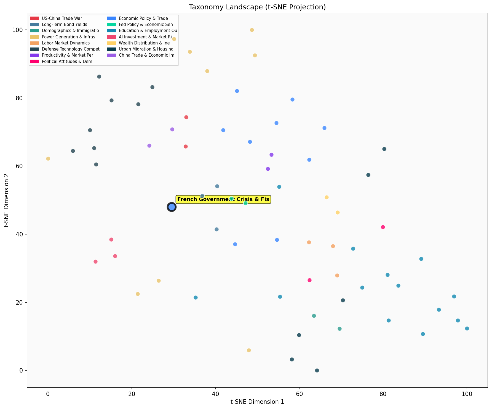

Description
This subcluster focuses on France's acute governmental instability and deteriorating fiscal position, characterized by rapid prime ministerial turnover, failed no-confidence votes, and mounting market pressure. Articles track bond spreads widening against German bunds, corporate credit deteriorating, and budget deficit reduction efforts triggering political crises. Coverage draws heavily from financial market data (Goldman Sachs, bond yields), political developments, and comparative European fiscal analysis. Unlike sibling subclusters examining broader economic performance or strategic policy debates, this cluster captures real-time crisis dynamics where fiscal consolidation attempts repeatedly collapse due to parliamentary opposition, creating a feedback loop between political fragmentation and financial market stress that distinguishes France's current predicament.
Similarity to All 70 Subclusters
Each cell represents a subcluster. Color intensity shows similarity (blue=low, red=high). Black line marks current subcluster position.
Relationship to Primary Clusters
Average similarity to each of the 15 primary clusters. Larger area = stronger relationship to that cluster.
Taxonomy Landscape
All 70 subclusters positioned by similarity (t-SNE). Current subcluster highlighted with label. Click to enlarge.
Network Connections
Current subcluster at center, connected to related subclusters. Line thickness = similarity strength.

Most Representative Articles
-
1. A fiscal package spearheaded by French premier Bayrou and intended to reduce the government's budget
-
2. The left and right in France brought down the government over an austerity plan that would have redu
-
3. Goldman believes it is likely the French government will lose next week’s confidence vote, slowing f
-
4. Negotiations over changes to Macron’s 2023 retirement reform that raised the minimum retirement age
-
5. Newly reappointed Sébastien Lecornu has proposed suspending plans to raise the retirement age to 64
Edge Cases (Boundary Articles)
-
1. China newsletter publisher @niubi notes that the scale of the protests is “remarkable and meaningfulThis article is clearly misclassified as it discusses Chinese domestic protests and security responses, having no connection to French governmental or fiscal issues. The article belongs in the "China Domestic Politics & Social Issues" cluster, as it directly addresses Chinese civil unrest and the government's anticipated crackdown response.
-
2. .@EuroBriefing argues that if French protests continue, they are likely to intensify, risking FranceThis article is borderline because while it discusses French protests that could make the country "ungovernable" - which relates to governmental instability - it focuses more on social unrest and protest movements rather than the specific fiscal crisis, prime ministerial turnover, and parliamentary dynamics that define the cluster. The mention of protests making France ungovernable is only tangentially connected to the cluster's core focus on institutional government failures and budgetary pressures.
-
3. Loans from the Bundesbank and other north European central banks prevented a sudden stop in southernThis article is borderline because while it mentions France's deteriorating fiscal situation (which fits the assigned cluster), its primary focus is on European central banking mechanisms (TARGET2 balances) and their effect on bond yields rather than France's governmental instability and political crisis. The content aligns more closely with treasury market dynamics and monetary policy interventions, making it a better fit for the alternative cluster about Treasury Market Dynamics and Foreign Demand.
Original Dendrogram